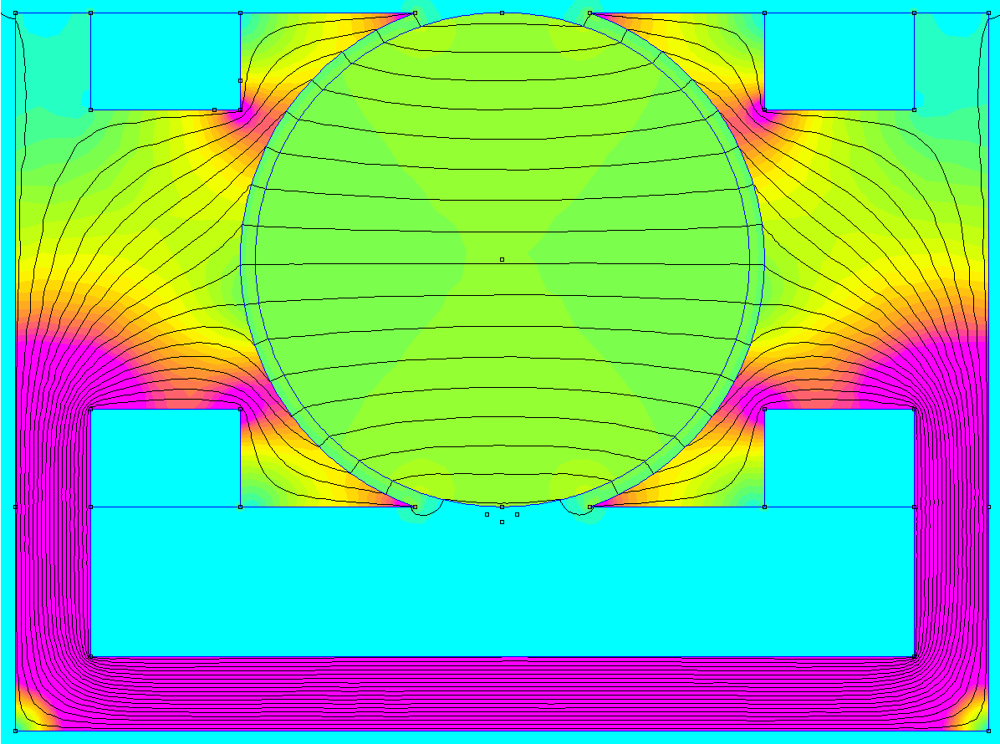

Prof. João Paulo Cerquinho Cajueiro
Universidade Federal de Pernambuco
Considerando um campo magnético constante, uma espira girando em torno de um eixo ortogonal ao campo gera uma tensão senoidal. Da mesma forma, uma corrente passando por esta espira gera forças ortogonais tanto à corrente quanto ao campo. O próprio movimento da espira gera um torque senoidal.
Para aumentar o fluxo magnético, o rotor é feito de material ferromagnético. Nesta condição o fluxo se distribue com densidade constante em volta do rotor, ficando sempre ortogonal à superfície deste.
Uma espira em torno deste rotor girando em torno do eixo gera uma tensão pulsada, constante enquanto na face de um polo e invertendo entre os polos.
Da mesma forma, a corrente passando por esta espira gera forças ortogonais tanto à corrente quanto ao campo, mas como agora o campo fica ortogonal ao movimento do condutor, gera-se um torque constante enquanto na face de um polo e invertendo quando a espira passa de um polo para o outro..
Um comutador inverte a espira sempre que o condutor está entre os polos, que é a posição onde o campo cai para zero e não há tensão induzida.